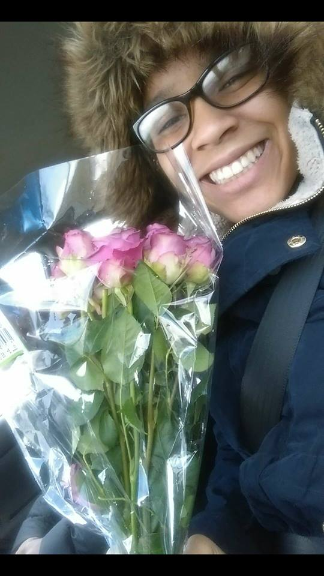
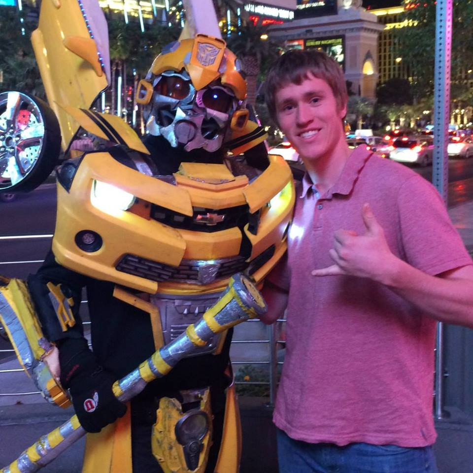

|
Owen Underwood is a junior at DePauw studying computer science. He was
born in Virginia, but his family lives in Switzerland. I play poker with a group
of other college students almost every weekend. For fun, I like to play basketball,
ping pong and go rock climbing. I also collect vinyl records from the Beatles to
the Rolling Stones to Common Market. |
|  |
Brea Llorens is a twenty-year-old Computer Science major from LaPorte,
IN. She decided to study computer science after joining a technology club
in high school and learning about programming. In the future she plans to
get a masters degree in software engineering and move to the Pacific
Northwest. Brea spends her free time teaching foreign languages to elementary
students, doing yoga, and drinking coffee. |
|  |
Chris Gerhardstein is currently a twenty-two year old at DePauw university.
He has no finite plans for after graduation but he would like to find work in
Lexington Kentucky. He enjoys long walks on the beach and playing ultimate
Frisbee with his friends. He enjoys recreationally playing poker with his friends
because it's easy booze money, he enjoys the social aspect of the game, and the
comradery that comes along with it. |